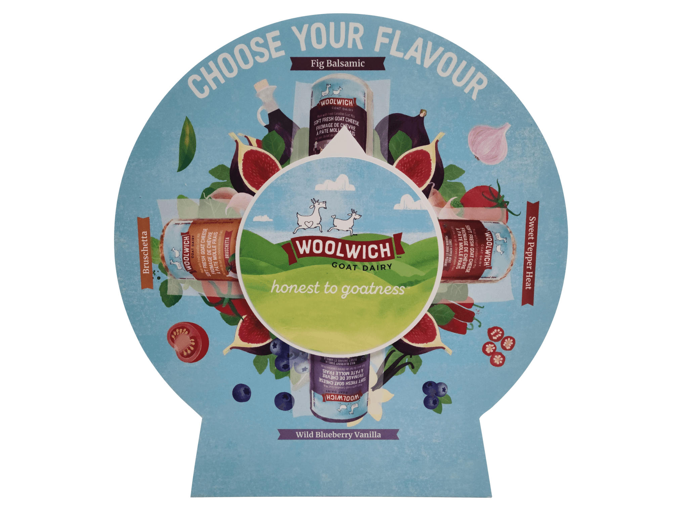
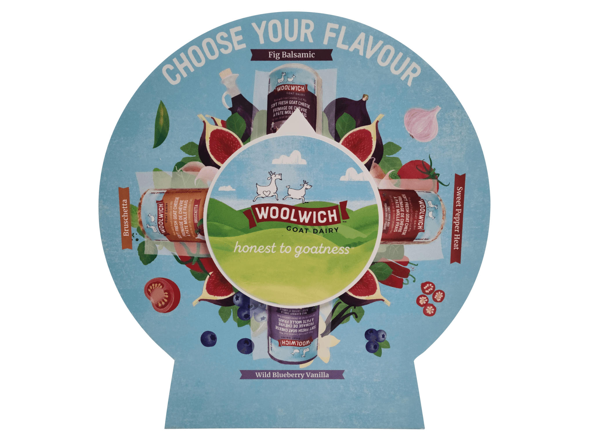

Je suis Jennifer Gauthier, une infographiste en reconversion de carrière âgée de 28 ans. Après plusieurs années d'expérience en préimpression, j'ai décidé de suivre une formation en développement web suite à mon intérêt pour la reproduction de site internet lors de mon DEP en Infographie. Aujourd'hui, je suis heureuse de mettre mes compétences en infographie au service de la conception de sites web innovants et je suis constamment en quête de nouveaux défis pour améliorer mes compétences. En tant que développeuse web, j'ai acquis de l'expérience dans la programmation en utilisant Visual Studio Code et en travaillant principalement avec les langages HTML, CSS, JavaScript, PHP et MySQL. Mon expérience dans le développement web s'est également étendue à WordPress, que j'ai utilisé lors de mon DEP en Infographie, ainsi qu'à la création d'un plug-in en équipe lors de mon AEC. La conception du plug-in a impliqué l'utilisation d'outils de gestion de projet tels que Trello, qui ont contribué à une collaboration efficace entre les membres de l'équipe et à la réussite du projet.
A.E.C. Developpement Web en 2023 au CEGEP Saint-Félicien D.E.P. Infographie en 2016 à Compétence 2000 Diplôme d’Étude Secondaire (D.E.S.) en 2013 à Jacques-Rousseau

En tant qu'infographiste en pré-impression, j'ai travaillé principalement avec la suite Adobe. Mes compétences se concentrent sur l'utilisation des logiciels tels que Photoshop, Illustrator, InDesign et Acrobat. J'ai acquis de l'expérience dans plusieurs entreprises, notamment :
SupremeX est une entreprise spécialisée dans la fabrication d'enveloppes, d'étiquettes, ainsi que d'emballages. En tant qu'infographe, j'avais la responsabilité de créer des épreuves PDF, de calibrer les couleurs, de retoucher les images et les documents, au besoin, afin de garantir une qualité optimale de l'impression. J'ai également été chargé de la fabrication de plaques flexographiques et offset, de manière rapide et efficace. Mon rôle consistait ainsi à maintenir les normes de qualité et de précision de l'entreprise, tout en utilisant des techniques efficaces pour des résultats optimaux.


Iflex (Fantasia) est une entreprise spécialisée dans la fabrication d'étiquettes autocollantes, numériques, à code-barres, et d'emballages flexibles. En tant que coordinatrice, j'ai assumé la responsabilité de planifier, coordonner et superviser les projets d'impression, tout en assurant la qualité de l'impression et la gestion des relations avec les fournisseurs externes. J'ai également suivi de près les progrès des projets d'impression et j'ai géré les dossiers de projet, assurant ainsi la mise à jour constante des informations.


CDN est une entreprise spécialisée dans la fabrication de cartes d'affaires, de dépliants et d'impressions grand format, telles que des bannières, des affiches, et autres supports visuels. En tant qu'infographe, ma mission consistait à concevoir et à développer des designs graphiques pour une variété de projets imprimés et numériques. J'étais également responsable de la production de projets d'impression, incluant la découpe, la lamination, la reliure, l'impression, et autres procédés connexes.

Accent Impression est une entreprise spécialisé dans l'impression commerciale, notamment les cartes d'affaires, les brochures, les dépliants, les catalogues, les affiches, les enseignes et les matériaux promotionnels. Mon poste consistait à concevoir des designs graphiques pour les produits imprimés, préparer les fichiers pour l'impression, y compris la vérification de la qualité des images, la résolution et la conformité aux normes de l'industrie.

 

JSsnake est un jeu que j'ai créé en utilisant JavaScript et CSS avec un design minimaliste. Il est basé sur le jeu classique Snake, où le joueur doit contrôler un serpent en mouvement pour éviter les obstacles et manger des aliments pour grandir.
JSWordle est un jeu de mots basé sur Mastermind que j'ai créé avec JavaScript et CSS avec un design minimaliste. Les joueurs doivent deviner un mot en utilisant le moins de tentatives possible.
Mon plugin WordPress est un jeu de tic-tac-toe qui permet aux utilisateurs de jouer à deux. Les joueurs peuvent jouer contre un autre joueur humain avec différents limite de temps.
Le site web que j'ai développé présente une ville que j'ai sélectionnée. Il est structuré en trois centres d'intérêt, d'une page dédiée à la présentation de la ville ainsi qu'un formulaire de contact qui n'a pas de destination d'envoi.